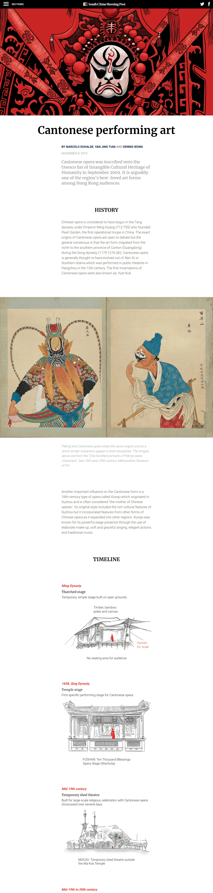
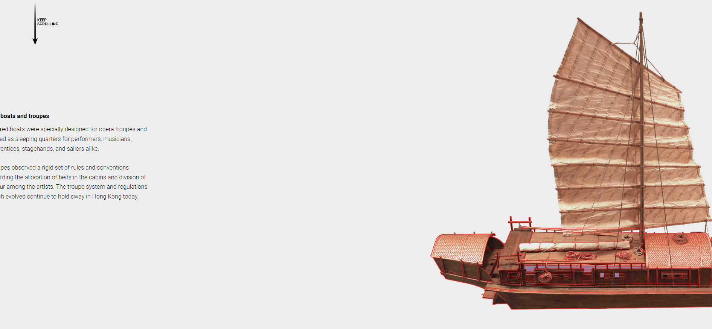
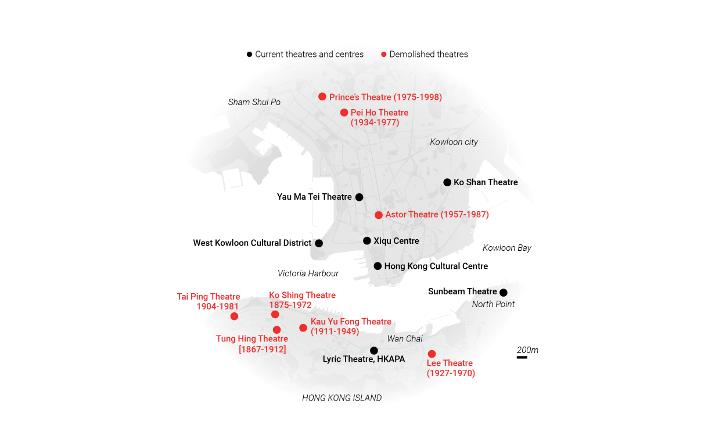
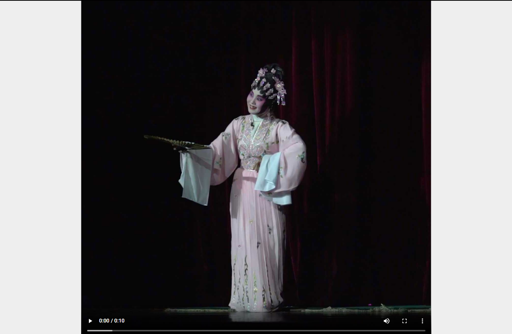

INFOGRAFÍA IMPRESA
Esta infografía creada por Marcelo Duhalde cuenta con lo que uno esperaría de una inforgrafía, como sería poseer un título, bajada, crédito, fuentes e incluso posee un vínculo a la versión digital en forma de código QR. En el centro se destaca un gran barco rojo el cual es rodeado por variados grupos de gráficos que complementan los diversos escenarios de la opera.
En el centro podemos apreciar al bote rojo en el cual vivia toda la compañia de ópera junto con la tripulación del barco, sin contar que tambien debian llevar sus pertenencias, vestuarios y materiales para los escenarios. La grafica nos muestra de forma detallada las distintas partes de los barcos junto con su interior.
Bajo el título se presenta una linea de tiempo la cual nos muestra como con el tiempo fue cambiando en donde los actores de la ópera cantonesa presentaban sus obras. Se puede ver en rojo la silueta de una persona la cual nos ayuda a dimensionar estos escenarios.
A la izquierda del bote se afirma que cada compañia de ópera poseía un equipo de 140 a 160 integrantes. Para hacer esta información más digerible se hizo un grafico no-figurativo que muestra de manera visual una comparación de los distintos roles que habían en una tripulacion en relacion a la cantidad de personal que cada uno tenia.
En la parte más baja de la infografía se encuentran representaciones de los seis roles más grandes de el sistema Xiandang de la ópera cantonesa junto con una breve descripción de cada uno. A su vez, tenemos a su derecha el proceso de aplicación de uno de los estilos de maquillaje más comunes, el estilo cara blanca y roja.
INFOGRAFÍA DIGITAL
Lo primero que nos presenta la infografía digital creada por Marcelo Duhalde, Yan Jing Tian y Dennis Wong es la historia de los origenes de la opera China junto con la misma linea de tiempo de la versión impresa.
El gráfico de el bote rojo que se encuentra en la versión impresa se logra ver más a fondo en la versión en digital de esta infografía: Se ubica justo cuando el sistema de scroll cambia, enseñando la infografía ahora de izquierda a derecha. Despliega la información ya antes vista junto con algunos datos que fueron agregados. Pero lo que realmente la diferencia es lo dinámica y enganchadora que se volvio al cambiar su formato de scroll.
Luego de volver a la forma más común de scrolling la infografía nos habla de la ópera china desde el siglo XIX al presente, agregando un nuevo tópico al tema. Nos muestra la ubicación de los teatros que se pueden visitar y los ya demolidos.
Se agrega material audiovisual que muestran a distintos actores y actrices en el escenario, demostrando sus distintas habilidades. Por otro lado, cuando se habla de su actuación, puesta en escena y música, la información es acompañada por una de las obras de Hong Kong Golden Voices grabada en 1958 en el fondo.
Adaptar una infografía impresa a digital logra que la información llegue a más personas, despues de todo, los equipos electrónicos son parte de nuestras vidas diarias.
Es por esto se debe adaptar la información y no simplemente escanear una imagen. Al hacer los cambios de papel a pantalla, este nos permite ordenan de mejor forma la información haciendola más sencilla y dinamica de ver. Por otra parte el apoyo audiovisual que no se puede conseguir en las infografías impresas nos brinda un mayor nivel de interacción, haciendo que el lector pueda engancharse más facilmente y haciendo la experiencia más memorable y dinámica.